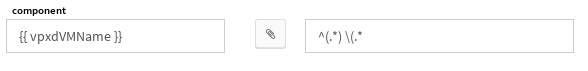

Snmp¶
This guide gives information about how to use the snmp system as a end user.
Contents
References¶
- TR::Snmp technical requirements
- FR::Snmp functional requirements
Updates¶
| Author(s) | Date | Version | Summary | Accepted by |
|---|---|---|---|---|
| Eric Régnier | 2015/11/23 | 0.1 | Document uses template |
Contents¶
SNMP Engine User¶
Canopsis Administration Tools comes with an engine designed to translate SNMP Traps generated by snmp2canopsis connector
In order to use that engine, you NEED to setup snmp2canopsis connector the right way.
MIBS Upload¶
In order to translate trap messages into check messages, snmp engine has to translate OIDs. To to such thing, MIBs are necessary.
In view.snmprule (View manager -> Search -> snmprule -> view), you can upload mibs
Select MIB files to Upload. Multiple select is accepted.
Note
Sometimes, MIBs modules depend on other modules. For now, upload process is not able to import modules in the right order. Note that alphabetical order is used to concatenate files
Note
Many mib files may be uploaded at the same time. When this happens, the canopsis UI sorts MIB files by filename. That’s the reason why, when mib depends each other, it is necessary to rename the files to upload.
If your mibs files contain NOTIFICATION TYPE or TRAP-TYPE objects, they will be inserted in a specific data collection (default_mibs).
SNMP Rules¶
It is possible in canopsis to translate SNMP traps to canopsis events by editing snmp translation rules. This can be done by going to the SNMP rule panel in the engine menu. This will take care of possible mib definition that are inserted into Canopsis thanks to the upload button.
Simple mode¶
First, create a rule by clicking on the create button on the top right of the screen. Then the snmp rule editor will appear.
From this form, you have to type the first letter that a mib module should contain, then a list of mib module will be shown. Then select a module in the list
Selecting a module in the list will perform a search for the related module’s mibs availables mibs. Then on the combobox on the right is the mib names.
Select a mib name will perform a second search that makes available mib objects for selected module. This search contains object names that can be used in templates. object names templates information can be added by just clicking on them. Module objects in template is given to the snmp engine and will be replaced by the value in the trap event snmp_vars property that have the same oid than the module’s object one. Clicking on a module object name for a template field will append the right template information to the template.
In the end, you have to choose the status that the snmp engine’s produced event will wear, and then the rule is over and ready to be hanlded by the snmp engine.
Advanced mode¶
In some cases, translate oid from snmp_vars to component, resource, output, state attributes could not be enough.
Let’s imagine this message received from snmp2canopsis :
{'component': 'XXX.XXX.XXX.XXX',
'connector': 'snmp',
'connector_name': 'snmp2canopsis',
'event_type': 'trap',
'snmp_timeticks': '2592518722',
'snmp_trap_oid': '1.3.6.1.4.1.5528.100.10.3',
'snmp_vars': {'1.3.6.1.4.1.5528.100.11.1': 'nbErrorCond_D0B11ADF',
'1.3.6.1.4.1.5528.100.11.10': '1438008965',
'1.3.6.1.4.1.5528.100.11.11': '1438008965',
'1.3.6.1.4.1.5528.100.11.12': '0',
'1.3.6.1.4.1.5528.100.11.13': '4',
'1.3.6.1.4.1.5528.100.11.14': '',
'1.3.6.1.4.1.5528.100.11.15': '0',
'1.3.6.1.4.1.5528.100.11.16': '0',
'1.3.6.1.4.1.5528.100.11.2': 'nbErrorType_podunpluggedsensor',
'1.3.6.1.4.1.5528.100.11.3': 'Perte de communication',
'1.3.6.1.4.1.5528.100.11.4': '',
'1.3.6.1.4.1.5528.100.11.5': '',
'1.3.6.1.4.1.5528.100.11.6': 'nbSNMPEncCC7A4999',
'1.3.6.1.4.1.5528.100.11.7': 'component name (XXX.XXX.XXX.XXX)',
'1.3.6.1.4.1.5528.100.11.8': '',
'1.3.6.1.4.1.5528.100.11.9': ''},
'snmp_version': '1',
'source_type': 'component',
'state': 3,
'state_type': 1,
'timestamp': 1438008970.011169
}
It is possible to use 1.3.6.1.4.1.5528.100.11.7̀ in snmp_vars as component name for translation. the problem is that you’re just interested with component name and not with the IP Address.
In rule editor, you can use the advanced mode
In the second input, you can write a regex to extract the string you need.
Note
Only first group (in parenthesis) will be used
The advanced mode is available for all listed attributes with a special thing for state.
Click on
Then you have to specify a regex for states you want to. Here is an example :
SNMP engine will translate the string “Reset/Resolved” to a state “Info (0)” in a Canopsis event